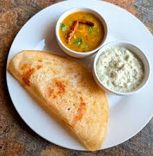

Classic Crispy Dosa

Dosa is a thin, crispy, and delicious South Indian pancake made from fermented rice and lentil batter. Here's how you can prepare it:
Ingredients:
- For Batter:
- 2 cups idli rice or regular rice
- 1/2 cup urad dal (split black gram)
- 1/4 teaspoon fenugreek seeds (optional, for flavor)
- 1/4 cup poha (flattened rice) (optional, for softness)
- Salt to taste
- Water (for soaking and grinding)
- For Cooking:
- Oil, butter, or ghee (for greasing the pan)
Instructions:
-
Soaking Ingredients:
- Wash and rinse rice, urad dal, and poha separately 2–3 times.
- Soak the rice and poha together in a bowl for 6 hours.
- Soak the urad dal and fenugreek seeds in another bowl for 6 hours.
-
Grinding the Batter:
- Drain the water from the soaked ingredients.
- In a blender or wet grinder:
- Grind urad dal and fenugreek seeds with a little water until smooth and fluffy. Transfer to a large bowl.
- Grind rice and poha together with water until smooth but slightly grainy.
- Combine both mixtures in a large mixing bowl. Add salt and mix well.
-
Fermenting the Batter:
- Cover the bowl and keep it in a warm place for 8–10 hours or overnight, allowing the batter to ferment and double in volume.
- After fermentation, gently mix the batter. Adjust the consistency with water to make it slightly pourable but not too thin.
-
Preparing the Pan:
- Heat a non-stick or cast-iron tawa (griddle) on medium heat until hot.
- Grease the pan lightly with oil using a brush or a half-cut onion for even spreading.
-
Making the Dosa:
- Pour a ladleful of batter onto the center of the hot tawa.
- Using the back of the ladle, spread the batter in a circular motion to form a thin, round dosa.
- Drizzle a little oil or ghee around the edges.
- Cook until the edges turn golden brown and the dosa becomes crispy (about 1–2 minutes). If desired, flip the dosa and cook the other side briefly for a softer texture.
-
Serving:
- Remove the dosa from the tawa and serve immediately.
- Serve hot with coconut chutney, sambar, or tomato chutney.
Serving:
Enjoy your homemade crispy dosa with your favorite chutneys and sambar! 😊